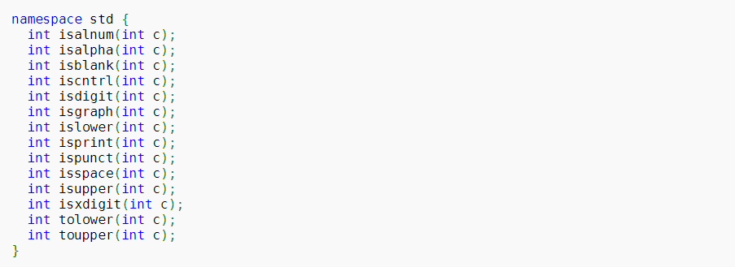
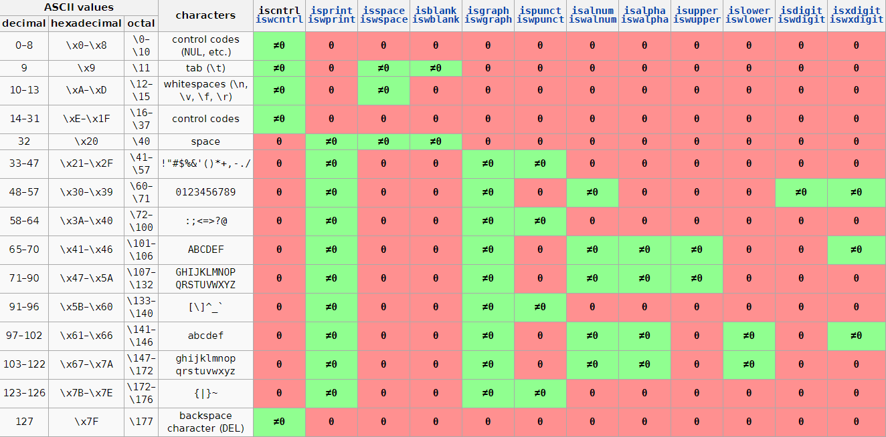

C++ 标准库＜cctype＞
前言
该库中共有14个函数，其函数签名如下：

字符分类
前 12 个函数属于字符分类的函数，其作用如下：
isalnum(ch)：当 ch 是字母或者数字时返回一个非零值，否则返回 0。字母或数字包括 26 个大写字母、26 个小写字母和 10 个十进制数字。isalpha(ch)：当 ch 是字母时返回一个非零值，否则返回 0。isblank(ch)：(C++11) 当 ch 是空字符时返回一个非零值，否则返回 0。空字符包括制表符和空格。iscntrl(ch)：当 ch 是控制字符时返回一个非零值，否则返回 0。控制字符包括 ASCII 码为 0x00-0x1F 和 0x7F的字符。isdigit(ch)：当 ch 是数字时返回一个非零值，否则返回 0。isgraph(ch)：当 ch 是一个有图形表示的字符时返回一个非零值，否则返回 0。有图形表示的字符包括大小写字母，数字，标点。islower(ch)：当 ch 是一个小写字母时返回一个非零值，否则返回 0。isprint(ch)：当 ch 是一个可打印字符时返回一个非零值，否则返回 0。ispunct(ch)：当 ch 是一个标点字符时返回一个非零值，否则返回 0。isspace(ch)：当 ch 是一个空白字符时返回一个非零值，否则返回 0。isupper(ch)：当 ch 是一个大写字母时返回一个非零值，否则返回 0。isxdigit(ch)：当 ch 是一个16 进制数数字字符时返回一个非零值，否则返回 0。包括 1234567890abcdefABCDEF。
对于具体的判定可参考下表：

字符操控
后 2 个函数属于字符操控的函数，其作用如下：
tolower(ch)：如果 ch 是大写字母，则返回对应的小写字母；否则原样返回 ch。toupper(ch)：如果 ch 是小写字母，则返回对应的大写字母；否则原样返回 ch。
注意事项
可以看到该库是对单个字符的操作库，但是其中所有函数接收的参数和返回值都是 int 类型。因此，在库函数的实现中，对于参数的值既不能表示为 unsigned char，也不等于 EOF 的行为是未定义的。所以为了安全的使用这些函数，实参最好转换为 unsigned char 类型。例如：
1 | // 对字符分类函数的使用 |
参考资料：cppreference